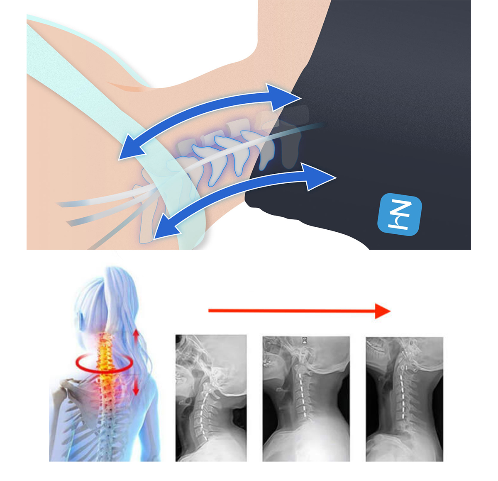
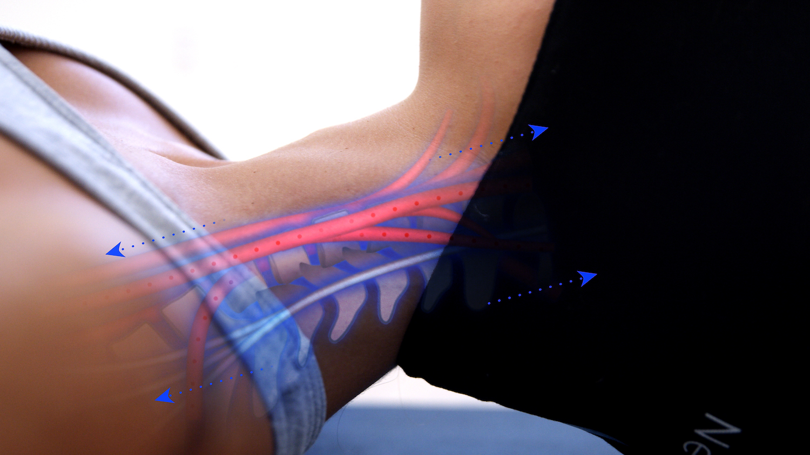

Meine Schlafprobleme, mein Stress und meine Kopfschmerzen waren dank dieses brillanten Geräts in 15 Minuten vorbei ...
"Erleichtern Sie Stress und Nackenschmerzen mit diesem genialen Gerät – selbst wenn sonst nichts funktioniert... "


Sitzen tut weh. Sich zu bücken tut weh. Das Drehen des Nackens tut weh. Manchmal ist es sogar problematisch, genug Schlaf zu bekommen, und morgens hat man das Gefühl, keine Minute geschlafen zu haben.
Kommt Ihnen das bekannt vor?
Ich arbeite seit 16 Jahren als Buchhalterin in einem großen Unternehmen. Jeden Tag, wenn ich mich stundenlang über den Bildschirm beuge, starre ich auf die Zahlen auf dem Monitor, und es kommt oft vor, dass ich Überstunden mache.
All dies und der arbeitsbedingte Stress haben meine Nackenschmerzen immer wieder eskalieren lassen - und mein Leben zur Hölle gemacht. Jeden Tag wachte ich mit Schmerzen auf, konnte mich nicht konzentrieren, und die Arbeit war eine echte Herausforderung, sowohl körperlich als auch geistig. Auch die Tatsache, dass meine Firma uns wegen der vorherrschenden Epidemie bat, von zu Hause aus zu arbeiten, hat nicht geholfen.
Die Ärzte waren hilflos - sicher, die Pillen wirkten eine Zeit lang, aber sie brachten mir nicht nur keine langfristige Linderung, sondern auch die Vision, mich mit ihnen für den Rest meines Lebens zu vergiften, war nicht gerade ermutigend.
Außerdem wurde mir klar, dass ich mich wegen der ständigen Nackenschmerzen nicht nur unwohl fühle, sondern auch meine Familie vernachlässige - ich konnte nicht mehr mit meinem Sohn spielen, wie ich es zuvor getan hatte, und aus einem glücklichen, lächelnden Vater wurde ein grimmiger alter Mann.
Als mein alter Freund mir von NeckHammock erzählte, war ich skeptisch. Zu oft habe ich von wunderbaren "schmerzlindernden Geräten" gehört, aber am Ende entschied ich mich, es zu versuchen - und mit gutem Gewissen muss ich sagen, dass es die beste Entscheidung meines Lebens war.
Zum ersten Mal seit Jahren erlebte ich eine vollständige Befreiung von meinen Nackenschmerzen - ohne unnötige Medikamente!
Was ist es?
Die NeckHammock ist ein tragbares Zuggerät zur Linderung hartnäckiger Nacken-, Rücken- und Schulterschmerzen. Sie wurde von einem Weltklasse-Chiropraktiker mit jahrelanger Erfahrung in der Linderung von Nacken- und Rückenschmerzen erfunden.
Die NeckHammock wird an der Türklinke eingehakt - was bedeutet, dass Sie sie zu Hause, bei der Arbeit, im Fitnessstudio ... buchstäblich überall mit einer Tür verwenden können!
Sobald ich sie an der Türklinke aufgehängt habe, lege ich meinen Kopf in den Ärmel, so dass mein Kopf leicht über dem Boden hängt, wenn ich einen oder zwei Schritte von der Tür entfernt bin.
Nach ein paar tiefen Atemzügen spüre ich, wie die Verspannungen in meinem Nacken, meinem Rücken und meinen Schultern anfangen zu schmelzen, während ich mich entspanne - es ist AMAZING.
Es ist sogar so beruhigend, dass ich manchmal anfange, in den Schlaf abzudriften!
Wie funktioniert es?
Stellen Sie es sich so vor... Ihr Chiropraktiker legt Sie auf den Tisch, damit er Ihren Kopf in ihren Händen halten und sanft daran ziehen kann. Dieser "Zug" auf Ihren Nacken sorgt für eine sofortige Entspannung in allen richtigen Bereichen. Die NeckHammock macht Exakt das Gleiche - zu einem Bruchteil der Kosten.
Die Kraft der NeckHammock liegt in einer kraftvollen Behandlung, die als zervikale Traktion bezeichnet wird, und ihr Zauber liegt in der Einfachheit ihres Designs.
Im Gegensatz zu anderen mechanischen oder mit Luftdruck arbeitenden Zuggeräten nutzt die NeckHammock Ihr eigenes Körpergewicht und Ihre Schwerkraft, um Ihre Nackenschmerzen sofort zu lindern.
Alles, was Sie tun müssen, um sie zu benutzen, ist:
- Wickeln Sie die elastischen Bänder um Ihren Türgriff
- Schließen Sie die Tür
- Legen Sie sich hin und legen Sie Ihren Kopf sanft in die Hängematte
Das macht es wirklich einfach, es von zu Hause aus zu benutzen. Es gibt keine komplizierten Maueranker und nichts zum Schrauben oder Nageln. Da die Neck Hammock an Ihrem Türgriff hängt, können Sie sie in Sekundenschnelle aufstellen oder wegpacken.
Wer kann von der NeckHammock profitieren?
So gut wie jeder, der Nackenbeschwerden hat oder einfach eine gute Massage mag! Dieses Gerät ist auch für Sportler zu empfehlen, die sich schnell erholen müssen. Tatsächlich haben mehrere professionelle Kämpfer begeisterte Kritiken über das Produkt abgegeben.
Sie können von der NeckHammock profitieren, wenn Sie unter Nackenbeschwerden leiden:
- ☑️ Steifer Nacken
- ☑️ Kopfschmerzen
- ☑️ Körperschmerzen
- ☑️ Kontinuierliche Müdigkeit
- ☑️ Probleme beim Greifen oder Anheben von Gegenständen
- ☑️ Muskelkater nach einem Fitnesstraining
Was macht NeckHammock so einzigartig?
- Wissenschaftlich bewiesen — Jahrzehntelange Forschung belegt die Vorteile der Halsdehnung.
- Benutzen Sie sie immer und überall — Die Neck Hammock kann um jede Tür, Geländer oder Stange gewickelt werden - so haben Sie die Flexibilität, sie nach einem langen Flug im Hotelzimmer, auf einer Yoga-Matte am Strand oder nach einem anstrengenden Arbeitstag bequem in Ihrem eigenen Schlafzimmer zu nutzen.
- Linderung in Minuten — Es braucht nur 10 -15 Minuten am Tag, um Ihren Hals richtig zu dehnen und Ihre Verspannungen zu lösen! Wenn Ihr Hals in einem sehr schlechten Zustand ist, verwenden Sie sie 2 - 3 Mal pro Tag für 15 Minuten.
- Beseitigt Stress und Unruhe Kunden berichten, dass die Neck Hammock so entspannend ist, dass Sie versuchen müssen, während des Gebrauchs nicht einzuschlafen.
- Perfekt zum Reisen Leicht zu verstauen im Gepäck auf Reisen oder im Kleiderschrank, wenn Sie zu Hause fertig sind. Handwäsche, Einheitsgröße.
Fragen und Antworten zu NeckHammock
-
F: Benötigt die NeckHammock Batterien oder andere Geräte?Nein, Sie brauchen nur die NeckHammock und einen Türknauf, um sie aufzuhängen - das war's!
-
F: Wie viel Zeit nimmt eine Sitzung in Anspruch?Eine Sitzung kann nur wenige Minuten dauern. Bei stärkeren Schmerzen können Sie bis zu 30 Minuten pro Tag verwenden.
-
F: Ist irgendeine professionelle Hilfe erforderlich?Für die Verwendung der NeckHammock ist keine professionelle Hilfe erforderlich.
Fazit: Ist es das wert?
Auf jeden Fall ja!
Die Erleichterung und Beweglichkeit, die ich durch die Verwendung der NeckHammock wieder im Nacken bekomme, ist unglaublich. Und das in nur wenigen Minuten, ganz bequem und bequem von zu Hause aus!
Wenn Sie wie ich sind und einen Großteil Ihres Stresses und Ihrer Verspannungen im Rücken, Nacken oder in den Schultern tragen - was sich nach der Arbeit von zu Hause aus nur noch verschlimmert hat - empfehle ich Ihnen dringend, dies einmal auszuprobieren. Sie bieten eine kostenlose 30-Tage-Geld-zurück-Garantie, so dass Sie es problemlos zurückgeben können, wenn es Ihnen nicht gefällt.
Ich empfehle Ihnen auch, die sehr attraktiven Rabatte für Mehrfachbestellungen zu nutzen, die NeckHammock anbietet. Warum nicht auch einen für Ihre Lieben oder einen für Ihre Freunde? Profitieren Sie jetzt, da diese Rabatte nicht ewig gelten werden.
Wie bekommen Sie Ihren eigenen NeckHammock?
Im Moment können Sie NeckHammock mit 50% Rabatt erhalten. Es ist ein erstaunliches Geschäft und ich bin sicher, dass es nicht lange dauern wird...
Wenn es noch verfügbar ist, erfahren Sie hier, wie Sie an Ihr Gerät kommen:
- Bestellen Sie NeckHammock auf der offiziellen Website.
- Erleben Sie, was für einen Unterschied NeckHammock für Ihre Schmerzen bedeutet!
So einfach ist es!
Wichtig: Stellen Sie sicher, dass Sie es von der offiziellen Website hier erhalten - dies ist NICHT bei Amazon verfügbar. Hüten Sie sich vor billigen Imitaten, die für Sie gefährlich sein können!
Was andere sagen... (verifizierte Käufer)
Dies ist eine Werbeanzeige. Diese Website dient der Vermarktung.Sie sollten sich bewusst sein, dass der Inhaber der Seite eine finanzielle Verbindung mit dem Produkt und Diensten hat, welche beworben und angeboten werden. Die Geschichte, die auf dieser Seite dargestellt wird, und die Person, die in der Geschichte dargestellt wird, sind keine wirklichen Neuigkeiten.